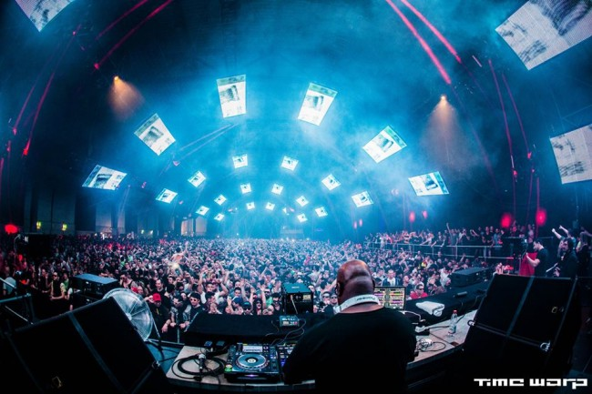

13 Tracks That Ruled Time Warp Germany
{kind=link}

Over the Easter weekend, Time Warp celebrated 21 years of techno-fueled all-nighters. While it was once a gathering exclusive to the southwest German city of Mannheim, Time Warp has since evolved into a world-renowned franchise that stretches to The Netherlands, Italy and Argentina; as well as making its debut in NYC last year.
The original Mannheim marathon, however, is the reigning rave all the offshoot events have to live up to. It’s also one of the most impressive large-scale parties anywhere in the world. With a lineup that’s essentially a Champions League of techno DJs, it’s clear why tens of thousands from across Germany and the rest of Europe make the pilgrimage to Mannheim’s sprawling Maimarktgelände exhibition hall every year.
2015 felt a little different, though. While previous events have played to techno purists with a focus on unrelentingly hard sounds, what stood out this year was a broader representation of house and techno. As such, the crowd was equally spread across the six rooms, with brain-melting attention to detail seen in the production on each and every floor.
Some of the party’s highlights came from unlikely places. There was the melodic succession of Tale of Us and Dixon on Floor 4 in the early morning, or the back-to-back set from Martinez Brothers and Seth Troxler that absolutely tore the same room apart over a three-hour closing set. Meanwhile, even hard-and-fast powerhouses like Chris Liebing on Floor 1 sounded a little more mellow this time around.
Then, of course, there’s that insane production. Time Warp puts to rest any argument that it’s impossible to achieve good acoustics in a cavernous hall, and every room was powerfully equipped. While the familiar undulating mesh ceiling made a return to Room 1, the real star this year was Time Warp’s mesmeric visuals. Richie Hawtin’s epic six-hour-plus finale in particular boasted 3D visual effects set to stun.
With a lineup that at any one time forced you to choose between Sven Väth, Carl Cox, Luciano and Laurent Garnier, it was more than you could ever hope to absorb at a single 20-hour marathon party. Here we’ve selected the tracks that defined our Time Warp 2015 journey.
Pedro Costa – “Consistency”
The eager early arrivals to Time Warp this year caught Steffen Baumann warming up Floor 1, as the rest of the venue slowly opened its doors. Taking things nice and slow as one of the party’s two main rooms began to fill, Baumann worked in this deep groover from Portugal’s Pedro Costa, which dropped on Ride Music earlier this year.
Savas Pascalidis – “Nightshades”
By the time Rødhåd took the reins of Floor 1 at 11pm, the familiar rattling techno that has shaken the Time Warp halls over the years had begun to take hold. The rising Berlin heavy proceeded to deliver one of the darker sets heard in the main halls this year. This suitably industrial number from Savas Pascalidis typified where his mind was at.
Roxx Cherry – “Cosmic Luv” (P-Ben remix)
In a sense, Time Warp peaked early in the main rooms this year, with Spain’s Paco Osuna laying down one of its unrelenting sets when he took over Room 1 shortly after midnight. The rolling grooves of P Ben’s mix of “Cosmic Luv” represented the groundwork he built from. By the time he reached the end of his 90-minute set, the energy was tearing the room apart.
Radio Slave – “Grindhouse” (Dubfire Terror Planet remix)
Meanwhile, right next door in Floor 2, Time Warp’s equally cavernous ‘other’ main room, Dubfire was bringing his ‘Hybrid’ live show to Mannheim for the very first time, after debuting it at Amsterdam Dance Event last year and wowing the crowds at the NYC edition of Time Warp a few months later. As before, a propulsive version of his classic Radio Slave remix represented the peak of the performance.
Einzelkind – “Just In Jack”
There was so much worthwhile action happening outside of the main two halls of Time Warp this year that it often felt like six unbeatable parties rolled into one. Floor 3 in particular felt like a reunion for Ibiza’s marquee techno headliners, with Luciano, Loco Dice, Joseph Capriati and Marco Carola all playing well into the afternoon.
Naturally, though, the one who started this hedonistic conga line was Ricardo Villalobos, with one of his trademark percussion-heavy sets, which peaked with the staggering intensity of those spiraling bass drops from Einzelkind’s soon-to-be-released “Just In Jack.”
Miguel Toro feat. Aerea Negrot – “Macuto” (Franco Cinelli remix)
Main room crowd-pleaser Luciano was up next in Room 3, playing a balanced mix of stripped-back techno and more house-y offerings. Franco Cinelli’s remix from several years ago fit somewhere in the middle of his impulses as a DJ.
Daniel Bortz – “Don’t Disturb Björn”
Floor 4 was another popular room for Time Warp this year, representing the broader appeal of the event. While it’s not the first time a posse of artists this impressive played Time Warp, this year the production was worthy of the talent.
Italy’s Tale of Us offered an epic and melodic two hours early on, though Innervisions stalwart Dixon stepped up immediately after to take the drama levels even higher, with “Don’t Disturb Björn” representing perfectly the kind of synth-soaked euphoria he brought with his set.
Tomaz & Filterheadz – “Los Hijos Del Sol” (Filterheadz 2015 Mix)
Meanwhile back over on Floor One, Time Warp stalwart Carl Cox was climbing towards the end of his annual three-hour set, allowing the UK veteran a better chance to flex his purist techno chops than he’s normally given in a festival set. Filterheadz’ 2015 edit of their percussive 2001 classic “Los Hijos Del Sol” provided some upbeat Latin techno vibes in the closing half hour of his set.
The MFA – “The Difference It Makes” (Superpitcher Remix)
Not to be outdone, Time Warp’s other mainstay Sven Väth was ripping through his own four-hour marathon set next door on Floor 2, in the unmistakable fashion of a veteran who refuses to ever slow down.
BPM-wise, though, his session was considerably pitched down from the thundering assault that was being laid down next door. The Cocoon don finished up his set with Superpitcher’s remix from several years back; an appropriate blend of trippy vibes and genuine emotion, with Väth throwing his hands in the air like the showman he is. “Unity… Music… Vision!”
Luigi Madonna – “Singer One”
Following straight on from Carl Cox, Berlin duo Pan-Pot offered one of the night’s most rollicking sets, the pulsing BPMs anchored by a bouncy groove that worked wonders in the cavernous surrounds of Room 1. Luigi Madonna’s “Singer One” dropped on Drumcode late last year, and it ably represents the kind of warehouse-strength grooves Pan-Pot were throwing down.
Mark Broom & Gary Beck – “Data Flux”
If there was a defining theme to Time Warp in 2015, it was the move towards more forgiving sounds. Even Frankfurt hardman Chris Liebing, who’s played some of Time Warp’s most brutal sets in the past, seemed content to slow things down a little with a more measured approach. This new single from Gary Beck and Mark Broom perfectly represented that shift.
Marc Houle – “Pepper” (Monkey Safari remix)
Even Room 6 was kept heaving to the early hours this year, with Monkey Safari offering a respite to the tougher techno heard across the rest of the Maimarktgelände. The duo’s set brought quirky grooves and seductive melodies in equal measure. Their deliriously epic remix of Marc Houle’s “Pepper” dropped on Beatport right around the time the pair were playing their set, and it brought suitable sunny vibes to the early-morning dancers.
Radio Slave – “Don’t Stop No Sleep” (Original Mix)
The surprise highlight of Time Warp this year? The back-to-back set that Seth Troxler played with his Tuskegee Music partners the Martinez Brothers over three hours. The trio took Floor 3 right up towards closing around midday, with a set of stripped-back techno funk that had the crowd locked in all the way. There was an unusually high level of groove on offer, though Radio Slave’s twisted banger from last year represented one of the finale’s tougher moments.